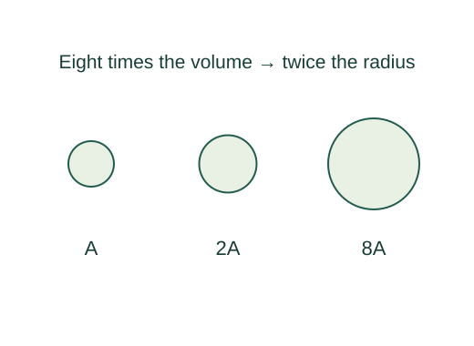

Derive nuclear radius scaling and a fusion confinement criterion
Nuclear volume is proportional to nucleon number. A spherical volume then makes radius proportional to the cube root of A. The fitted coefficient r₀ is empirical.
What the symbols mean
A: nucleon count; n: total ion density with nD = nT = n/2; τ: energy-confinement time; Eα: alpha heating per D–T reaction.
When this applies
Approximately constant nuclear matter density for radius scaling; equal-temperature quasineutral D–T plasma, simple energy balance without radiative losses for the illustrative confinement estimate.
Developing the argument

Assume approximately constant nuclear density
Nuclear volume is proportional to nucleon number. A spherical volume then makes radius proportional to the cube root of A. The fitted coefficient r₀ is empirical.
Count fusion reactions per volume per time
For two distinct reactant species, the thermally averaged reaction rate is nDnT⟨σv⟩. With equal fractions this is n²⟨σv⟩/4.
Count thermal energy to be retained
For equal ion and electron temperatures with electron density n, both populations contribute 3nkBT/2, so total thermal energy density is 3nkBT.
Require heating to meet losses
Set alpha heating at least equal to the simplified loss rate and cancel one density factor. The threshold depends on temperature through both T and the reactivity.
A worked example
Radius scaling predicts that increasing nucleon number by eight approximately doubles nuclear radius.
Derivation behind this calculation ↗A point to keep straight
A fixed numerical Lawson threshold is not fundamental or universal. Fuel choice, temperature, losses and the definition of confinement determine it.
Check the assumptions and derivation ↗